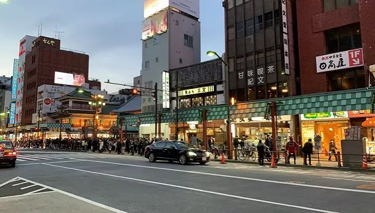

「武汉加油」：疫情中的日本援手｜特别报道
原文链接 备份链接 关注并星标消费新声 不错过泛消费任何最新动态 尤其在近十年，尽管国际形势时有起落，但两国的经济和民间交流正在不可逆地粘连到一起，相似的传统文化背景让我们之间形成对照，成为几乎不可能被斩断的近邻。 作者 | …

日本街头。来源：受访者提供
记者：卢奕贝 编辑：昝慧昉
“
郑一加入了沉默着的中国游客队伍，排队购买口罩。她抬头，发现店铺的门口用中文写着几句，“加油啊，武汉加油啊，中国加油”。
”
这是郑一第一次去日本。提前3个月，她和同行的兄妹三人早早请好年假，预定了酒店机票，打算在春节期间来一次为期15天的日本深度自由行。
1月18日，飞行3000公里，郑一第一次踏上了东京的土地。她喜欢日本街头的干净整洁，喜欢浅草寺、银座、表参道的风情各异，也喜欢日本人在各个角落摆放的“鼠”类吉祥物——这是日本人欢迎中国游客的可爱表达。这时，郑一唯一的烦恼，就是刺身吃太多，有点拉肚子。
但2天后，整个世界开始变得魔幻。
1月20日，钟南山院士在接受央视新闻采访时，发布了令人震惊的信息：新型冠状病毒肺炎存在人传人现象。截止当晚24时，根据国家卫健委的数据，国内4省（区、市）累计确诊291例（湖北省270例，北京市5例，广东省14例，上海市2例），以及日本1例，泰国2例，韩国1例。
郑一的手机一直疯狂震动，各类新闻在无数个微信群里转发。她的家族群立刻开始确认家里有多少酒精、口罩，互相叮嘱千万不要出门、不要乱跑、不要聚集。
手机这一头郑一所在的日本也跟着紧张起来。
在东京的酒店里，有日本电视台滚动播报肺炎相关信息，称已经有几十万中国人抵达了日本。
日本原本就是中国人春节最爱去的海外国家之一。据日本出入国在留管理厅统计，2019年2月份（包括春节期间）的中国访日游客达到65万人。但2020年的这个春节，中国人的出境游被中途叫停。
1月25日，中国旅行社协会发布消息称，即日起全国旅行社及在线旅游企业暂停经营团队旅游及“机票＋酒店”产品。1月27日后，包括出境游在内的所有团队游及“机+酒”服务全部暂停。
中国访日游客数量减少，让日本的旅游业遭遇巨变。2月4日，日本旅游行业协会指出，众多中国旅行团已经取消3月底前的赴日旅行，预计未能按原计划出行的中国游客总数将超40万。
反应是连锁的。日本百货店春节假期免税销售额遭遇两位数下滑，日本酒店入住率锐减，就连奈良公园里面的梅花鹿也遭遇“断粮”。
但当时身在日本的郑一，并没有意识到未来会有这样的变化。她唯一可以确定的是，他们在日本的行程需要改变了。
据郑一观察，20号以前的东京，除了在交通工具上，有少数日本人因本身习惯的原因戴口罩之外，在景点戴口罩的人仅有10%不到。而在那之后，日本街头，只要看起来像是华人的脸上，都戴了口罩。

1月28日，景点里的游客们纷纷戴上了口罩。来源：受访者提供
此时，国内的社交网络上已经开始蔓延着“口罩涨价”、“口罩还能发货吗？”、“问了几家才有口罩卖”的言论。
本该沉浸于日本赏景的惬意，被手机里每天变化的疫情消息打乱了，原本没有安排什么购物行程的郑一兄妹三人，决定前往药妆店买点口罩带回家。
但到底买什么型号的口罩才能防御新冠肺炎病毒，也让郑一三人迷茫了许久。在忙乱地查询了一番资料后，各种专业名词只令他们更混乱。最终，他们向曾经租过车的日本司机求助，才知道该买BFE、VFE、PFE三种型号的口罩。
自27号开始，他们踏入了“寻购口罩模式”。从京都到大阪，每一天只要路过了药妆店，郑一都会进去看看有没有口罩可以买。但这并不容易，大量已经来到日本的中国游客和日本当地人一起，买空了大部分药妆店的口罩库存。
不久日本口罩也开始限购了。郑一在起初并没有看到任何购买口罩的限制，但随着众人的抢购，有些店铺开始每人限购两盒或者三盒。尽管如此，口罩仍然频频售罄。
每每看见药妆店门口贴着“口罩售罄”的告示，郑一都会担心后面会不会买不到。因为她家里成员众多，只采买几盒恐怕不够全家所需。同时，还有许多知道她人在日本的朋友，询问能不能帮忙代购，信息蜂拥而至。
“本以为会有人找我代购化妆品的，没想到会变成口罩”郑一打趣道。
但她也的确爱莫能助。郑一每天都要逛上三、四家药妆店，几天内就跑了上十家店铺。但是买到的口罩连家人所需都不够。
“每一家都缺货”郑一对界面新闻说。

1月31日，日本药店口罩缺货。来源：受访者提供
站在大阪街头，买不到口罩的郑一，无奈拦下路人询问。那是一家香港人，他们告诉郑一，要买口罩，得一大早出门寻找，并向她展示了他们早早起床抢到、拎着走了一天的一袋口罩。
郑一根据他们的说法，最终找到了有货的店铺，她加入了沉默着的中国游客队伍排队等待。她抬头，发现店铺的门口用中文写着几句，“加油啊，武汉加油啊，中国加油”。
这并不是单一店铺的行为。疫情爆发、尤其是日本也通报确诊病例后，日本各地口罩的销量开始激增，虽然涌入药妆店购买口罩的大部分都是华人，但日本的药妆店并没有趁机哄抬价格，很多店家都在店门口贴出了“中国加油”的字样。
日本捐助的口罩，也为在春节期间工厂放假的中国，解了燃眉之急。自1月25日，第一架装载有日本民间捐助的100万只防疫口罩的飞机抵达成都双流国际机场开始，日本各地、各界陆续捐赠了大量的防疫物资，并用诗句来表达祝福。
“辽河雪融，富山花开；同气连枝，共盼春来。”
“岂曰无衣，与子同裳。”
最终，郑一兄妹三人的行李箱、随身携带的背包里，只要有空余的地方，都挤满了口罩。2月1日，郑一踏上归国的路途，此时的机场已经与她来时大不相同，只要是亚洲人，都戴上了口罩，有位欧美人，甚至戴上了护目镜。
而她的战疫，才刚刚开始。
未经授权 禁止转载

原文链接 备份链接 关注并星标消费新声 不错过泛消费任何最新动态 尤其在近十年，尽管国际形势时有起落，但两国的经济和民间交流正在不可逆地粘连到一起，相似的传统文化背景让我们之间形成对照，成为几乎不可能被斩断的近邻。 作者 | …
原文链接 备份链接 记者/颜星悦 编辑/计巍 宋建华 姜啸戴着口罩和眼罩，站在弗洛伦萨的街头 2月2日，意大利佛罗伦萨街头，姜啸戴着口罩，用黑色的布条蒙着双眼，站在广场中央。他的身边立着一块牌子，上面写着：“我不是病毒，我是人类，不要对我 …
原文链接 备份链接 来源：图虫 记者：卢奕贝 编辑：牙韩翔 “ 疫情影响之下全球防护设备，尤其是口罩供不应求。这让所有口罩生产商的工厂都开始忙碌起来。 ” 一家名为Kolmi Hopen的公司突然收到了一大笔订单——5亿个口罩。 这家位于 …
原文链接 备份链接 在苏格兰格拉斯哥大学读书的几个中国留学生去超市购物的路上，一个当地老奶奶询问他们：“是中国来的学生吗？”当他们回答“是”之后，老奶奶说：“let me give you a hug（让我给你一个拥抱）”。 全文2275 …
原文链接 备份链接 _ _ _ _ 1月31日，意大利宣布国家进入紧急状态，当天便停飞了来往中国的航班。朋友告诉我，很多国人滞留在了意大利，其中便有她的前同事翔哥。 我和翔哥联系上的时候是2月4号，那时他已离开了意大利，到了阿布扎比（阿联 …